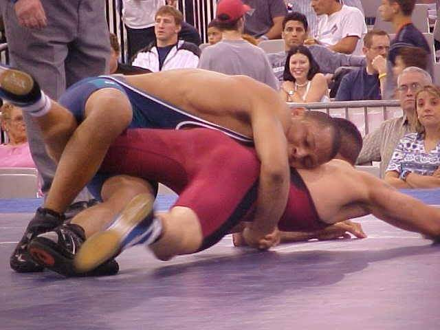
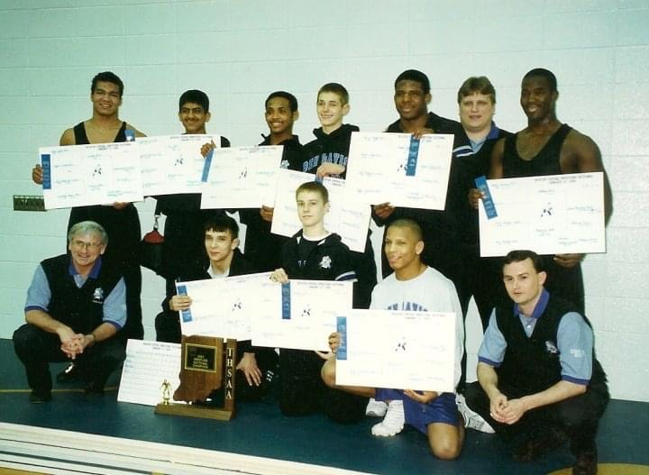

Technical
- HTML5
- CSS3
- JavaScript
- PHP
- NodeJS
- NoSQL
- SQL
- Docker
- AWS
Creative
- Logic Pro
- Final Cut X
- Adobe Photoshop
- Adobe Audition
- Adobe Illustrator
Interpersonal
- Small Business Development
- Speaker
- Author
- Leader
- Innovator
I have had always had a passion for art, fitness and education. As a youth I was the first freshman in my high school history to win a IHSAA Regional Championships. In addition winning state titles in Greco-Roman wrestling, high school state placer and US Cadet Greco-Roman All-American with competions in Japan and Europe.
 
Sometimes when you have a good side, people assume life was easy or things came sweet but I'd beg to differ. In fact, some of thow world's most talented individuals have faced the most adversity.